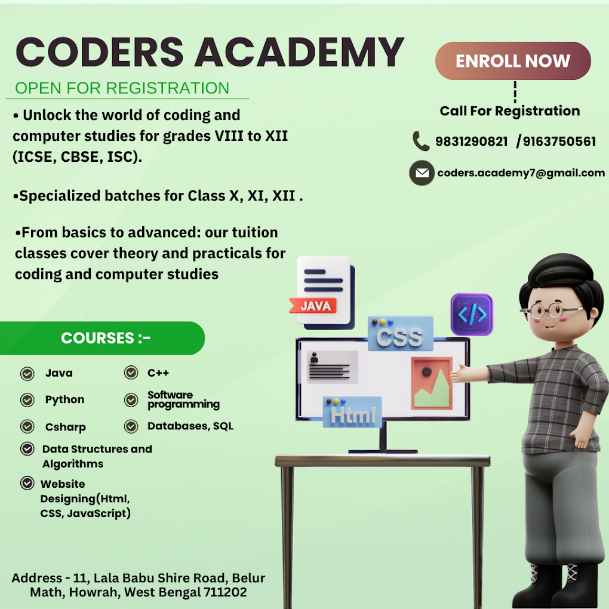

Welcome to Coders Academy

Learning a computer language is crucial for anyone interested in programming or technology. Computer languages are tools that enable humans to communicate instructions to computers effectively. Here's a brief overview of important aspects:
- Importance of Learning Computer Languages:
- Enables you to write programs and software.
- Facilitates automation of tasks.
- Enhances problem-solving skills.
- Opens doors to careers in software development, data science, artificial intelligence, etc.
- Fosters logical thinking and creativity.
- Description of Important Languages:
- Python: Known for its simplicity and readability, Python is popular in web development, data analysis, machine learning, and artificial intelligence.
- Java: Renowned for its platform independence, Java is widely used in enterprise applications, Android app development, and large-scale systems.
- JavaScript: Primarily used for web development, JavaScript enables interactive web pages and dynamic content. It's also used in frameworks like React and Angular.
- C++: Known for its performance and versatility, C++ is used in game development, system/software programming, and high-performance applications.
- C#: Developed by Microsoft, C# is used in developing Windows applications, game development with Unity, and enterprise software.
- Ruby: Celebrated for its simplicity and productivity, Ruby is often used in web development, especially with the Ruby on Rails framework.
- Swift: Apple's Swift is used for iOS and macOS app development. It offers safety features and modern syntax.
- SQL: Structured Query Language (SQL) is used for managing and manipulating databases. It's essential for data-driven applications.
- HTML/CSS: While not programming languages, HTML and CSS are fundamental for building web pages and designing their layout and style.
- R: Specialized for statistical computing and graphics, R is popular in data analysis, visualization, and research.
Each language has its strengths and specific domains where it excels. Choosing a language depends on your interests, project requirements, and career goals.